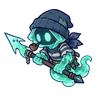

| วิญญาณธงขาด | 16–22 | สนามรบเก่ากลางทุ่ง · สนามรบเก่ากลางทุ่ง |
 ผีดวงไฟ ผีดวงไฟ | 20–96 | เนินสุสานโบสถ์ร้าง · เนินสุสานโบสถ์ร้าง · เนินสุสานโบสถ์ร้าง |
 ผีเสื้อหลุมศพ ผีเสื้อหลุมศพ | 28–36 | สวนรูปปั้นร้องไห้ · สวนรูปปั้นร้องไห้ |
 ภูตเถ้าถ่าน ภูตเถ้าถ่าน | 30–43 | ป่าไหม้ถ่านคุ · ป่าไหม้ถ่านคุ · ทุ่งตอไม้ควันขาว |
 ผีขุดหลุม ผีขุดหลุม | 30–38 | สุสานเก่าหลังเนิน · สุสานเก่าหลังเนิน · หุบหมอกโลงศพ |
| แม่ม่ายหมอก | 30–38 | หุบหมอกโลงศพ · หุบหมอกโลงศพ |
| ผีดวงไฟ · ร่างม่วงหม่น | 30–38 | สุสานเก่าหลังเนิน · สุสานเก่าหลังเนิน · สวนรูปปั้นร้องไห้ |
| ตะเกียงหลงทาง | 32–40 | ค่ายผู้อพยพร้าง · ค่ายผู้อพยพร้าง |
 วิญญาณเทียน วิญญาณเทียน | 34–48 | สุสานใต้ดิน ชั้น 1 · สุสานใต้ดิน ชั้น 2 · ห้องราชา · หอรากมืด (Dark Root) |
| ตะเกียงหลงทาง · ร่างเปลวฟ้า | 34–42 | ค่ายผู้อพยพร้าง |
 คนงานเหมืองผี คนงานเหมืองผี | 57–78 | เหมืองลึกผลึกส้ม · เหมืองลึกผลึกส้ม · ทางรางเหมืองแขวน |
 รถเข็นแร่ผีสิง รถเข็นแร่ผีสิง | 57–78 | เหมืองลึกผลึกส้ม · เหมืองลึกผลึกส้ม · ทางรางเหมืองแขวน |
| ผีนักเดินทาง | 60–70 | สุสานคนเดินทาง · สุสานคนเดินทาง |
| ผีเจ้าของโรงเตี๊ยม | 62–72 | โรงเตี๊ยมกลางทาง · โรงเตี๊ยมกลางทาง |
 นกขมิ้นผีในกรง นกขมิ้นผีในกรง | 62–72 | ค่ายคนงานใต้ดิน · ค่ายคนงานใต้ดิน · ค่ายคนงานใต้ดิน |
| ผีนักเดินทาง · ร่างไฟอุ่น | 62–72 | สุสานคนเดินทาง |
| นกขมิ้นผีในกรง · ร่างขนฟ้า | 64–72 | ค่ายคนงานใต้ดิน |
| วิญญาณควันดำ | 66–81 | ปากปล่องควันดำ · ปากปล่องควันดำ |
| วิญญาณควันดำ · ร่างควันขาว | 68–84 | ปากปล่องควันดำ |
 กะลาสีผี | 72–92 | ซากเรือในหมอก · ซากเรือในหมอก · เกาะสุสานเรือ |
| กะลาสีผี · ร่างอำพัน | 72–88 | ซากเรือในหมอก |
 หนังสือบิน หนังสือบิน | 78–85 | หอบัญชีใต้วิหาร ชั้น 1 · หอบัญชีใต้วิหาร ชั้น 1 · หอบัญชีใต้วิหาร ชั้น 2 · ห้องบัญชี |
| ชาวเมืองหมอก | 84–92 | เกาะกลางทะเลสาบ · เกาะกลางทะเลสาบ · เกาะกลางทะเลสาบ |
| หนังสือบิน · ร่างปกทอง | 84–88 | หอบัญชีใต้วิหาร ชั้น 2 · ห้องบัญชี |
 ภูตแสงม่วง ภูตแสงม่วง | 86–94 | ป่ารากดำ · ป่ารากดำ · ขอบป่าต้นไม้มืด |
 กระดิ่งเงียบ กระดิ่งเงียบ | 86–94 | ทางเดินเงาไร้เสียง · ทางเดินเงาไร้เสียง |
| ผีคนเฝ้าประภาคาร | 86–92 | เกาะประภาคารดับ · เกาะประภาคารดับ |
 รูปปั้นผ้าคลุมหน้า รูปปั้นผ้าคลุมหน้า | 92–98 | สวนรูปปั้นขาว · สวนรูปปั้นขาว |
 ผู้จุดตะเกียงรุ่นแรก ผู้จุดตะเกียงรุ่นแรก | 98–99 | หลุมดาว ชั้น 1 · พื้นแก้ว · หลุมดาว ชั้น 2 · ใจกลางดาว |
| ผู้จุดตะเกียงรุ่นแรก · ร่างทอง | 99–99 | หลุมดาว ชั้น 2 · ใจกลางดาว |